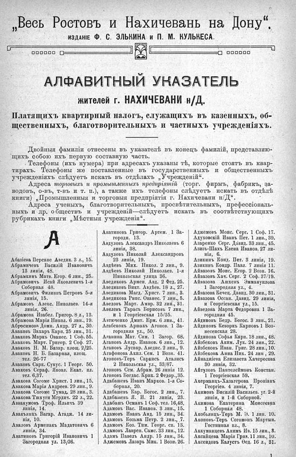

Лист источника 537
Скан

Распознанный текст
„Весь Ростовъ и Нахичевань на Дону“.
ИЗДАНІЕ Ф. С. ЭЛЬКИНА И П. М. КУЛЬКЕСА.
АЛФАВИТНЫЙ УКАЗАТЕЛЬ
жителей г. НАХИЧЕВАНИ н/Д.
Платящихъ квартирный налогъ, служащихъ въ казенныхъ, об-
щественныхъ, благотворительныхъ и частныхъ учрежденіяхъ.
Двойныя фамиліи отнесены въ указателѣ въ конецъ фамилій, представляю-
щихъ собою ихъ первую составную часть.
Телефоны (ихъ нумера) при адресахъ указаны тѣ, которые стоятъ въ квар-
тирахъ. Телефоны же поставленные въ государственныхъ и общественныхъ
учрежденіяхъ слѣдуетъ искать въ отдѣлахъ „Учрежденій“.
Адреса торговыхъ и промышленныхъ предпріятій (торг. фирмъ, фабрикъ, за-
водовъ, о-въ, т-въ и т. п.), а также ихъ телефоны слѣдуетъ искать въ отдѣлѣ
книги) „Промышленныя и торговыя предпріятія г. Нахичевани н/Д“.
Адреса ученыхъ, благотворительныхъ, просвѣтительныхъ, профессіональ-
ныхъ и др. обществъ и учрежденій—слѣдуетъ искать въ соотвѣтствующихъ
рубрикахъ книги „Мѣстныя учрежденія“.
А
Абазіева Персапе Аведик. 3 л., 15.
Абрамичевъ Василій Ивановичъ
13 линія, 48.
Абрамкинъ Матв. Егор. 6 лин., 25.
Абрамовичъ Исай Яковлевичъ 1-я
Соборная 48.
Абрамовичъ Филиппъ Петровъ 5-я
линія, 15.
Абрамовъ Алекс. Николаев. 14-я
линія, 26.
Абрамова Изабел. Григор. 8 л., 13.
Абрамова Марія Никол. 6 лин., 19.
Абросимова Домн. Андр. 27 л., 30.
Аваковъ Захаръ Карп. 25 лин., 31.
Аваковъ Маркъ Ованес. 1 Соф. 55.
Аваковъ Март. Григор. 2 Соф. 27.
Аваковъ Н. М. Базар. площ. 2/25.
Аваковъ Н. Б. Базарная, площ.
тел. 26-77
Аваковъ Сарк. Сукус. 1 Георг. 50.
Аваковъ Сераф. Яковл. Екат. пл.
тел. 6,37.
Авакова Согоме Христ. 1 лин., 15.
Авакова Марія Андреев. 29 лин., 9.
Авакова Согоме Тумад. 28 лин., 3.
Авакова Тшхуги Мгртич. 22 л., 22.
Аввакумовъ Троф. Ильичъ 39
линія, 14.
Авакьянцъ Вагар. Агадж. 14 ли-
нія, 10.
Аваловъ Арменакъ Мадатовичъ 6
линія, 34.
Аватиновъ Григорій Ивановичъ 1
Загородная ул. 13/26.
Аватиновъ Григор. Артем. 1 За-
городн. 13.
Авдуловъ Александръ Николаевъ 6
линія, 38.
Авдуловъ Николай Александровъ
23 линія, 19.
Авдѣевъ Мих. Никол. 2 лин., 9.
Авдѣевъ Николай Николаев. 1-я
Никольская улица 36.
Аведиковъ Армен. Авд. 2 Фед. 25.
Аведиковъ Викт. Авдѣев. 18 л., 27.
Аведикова Магд. Христ. 7 лин., 3.
Аведикова Рипс. Ованес. 7 лин., 5.
Авелевъ Март. Амвр. 32 лин., 31.
Авелевъ Тарасъ Борисовъ 7 лин.,
и 1 Георгіевская 15/35.
Автюченко Дмит. Ерм. 6 лин., 41.
Агабековъ Аршакъ Агопов. 1 За-
городняя ул., 50.
Аганина Мат. Сим. 1 Загор. 68.
Агановъ Андр. Иванов. 6 лин., 12.
Агановъ Луспар. Аведис. 2 лин., 9.
Агафонова Акил. Сем. 1 Возн. 41.
Агоповъ-Теръ Саркисъ Аталисъ
2 Никольская ул., 33/87.
Агоновъ Сем. Абрам. 26 линія 12.
Агоповъ Богдас. Крик. 2 Федор., 35.
Адабашевъ Иванъ Марков. 1-я Со-
борная, 20.
Адабашевъ Кар. Богос. 2 лин., 7.
Адабашевъ Я. И. 21 линія, 23.
Адабашъ Османъ 1 Соф. тел. 16,48.
Адамовъ Вас. Иванов. 3 лин., 15.
Адамовъ Иванъ Анд. 15 лин., 34.
Адамовъ Козьма Петр. 2 лин., 7.
Адамовъ Коз. Тим. Георг. сп. 13.
Адамовъ Лаврен. Самс. 33 лин., 12.
Адамъ Павелъ Андр. 15 лин., 34.
Аджемовъ Лазарь Мик. 1 Возн. 26.
Аджемовъ Моис. Серг. 1 Соф. 17.
Адуховскій Иванъ Пет. 1 лин., 39.
Азаренко Серг. Давид. 33 лин., 45.
Азизъ-Шахъ Елена Иванов. 27 ли-
нія, 6.
Азикинъ Конд. Пет. 3 линія, 19.
Азикинъ Кондр. Павл. 7 линія 11.
Айвазовъ Моис. Егор. 2 Возн. 16.
Айвазовъ Хач. Серг. 2 Соф. 37/19.
Айвазова Ашхенъ Эммануилова
1 Загородняя ул., 4.
Айвазова Кечец. Давид. 30 лин., 31.
Айвазова Оссан. Давид. 29 линія,
и Георгіевская ул., 15.
Айведова Марта Федоровна 1 За-
городная 45.
Айдиновъ Бедр. Богос. 3 лин., 21.
Айдиновъ Кеворкъ Карповъ 1 Воз-
несенская 28.
Айдинова Софья Карп. 18 лин., 48.
Айзбековъ Аким. Лук. 24 лин., 22.
Айзбековъ Иван. Григ. 28 лин., 10.
Айзбекова Анна Ник. 24 лин, 29.
Айнаджіева Елизавета Хачересова
30 линія, 32.
Айтуловъ Пантелеймонъ Констан.
1 Георгіевская 59.
Акерманцъ-Хазагерова Пропіанъ
Георгіев. 4 линія, 7.
Акимовъ Василій Васильев. уг. 2-й
линіи, и 1-й Соборной.
Акимова Екатерина Моисеевна
1 Соборная 48.
Акобьянцъ-Теръ М. Э. 1 лин. 10.
Акоповъ-Теръ Согомонъ Мартын.
Гостинная пл., 8.
Аккуманцевъ Акимъ Ив. 15 лин., 3.
Аксайцева Марія Григ. 11 лин., 10.
Аксендовъ Калустъ Ѳед. 16 л., 31.
1